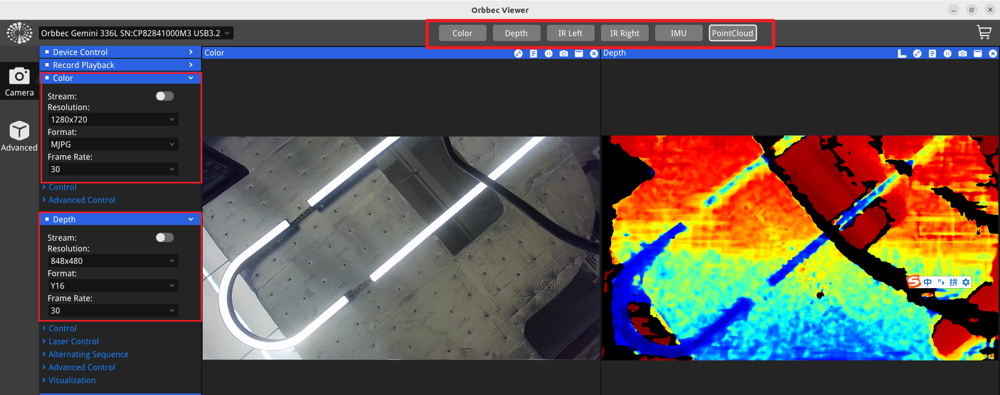

OrbbecViewer 快速入门
注意： 此 ROS 包的参数和功能与 Orbbec Viewer 保持一致；有关参数使用或设备型号支持的任何问题，请参考 Orbbec Viewer。
下载
仓库链接：OrbbecViewer 下载
根据您的设备类型选择合适版本的 OrbbecViewer。

连接设备
当 Orbbec Viewer 打开时，当前设备连接状态将显著地显示在应用程序窗口的左上角。此区域提供关于相机是否已连接并正常工作的即时反馈。
相机控制
您可以使用窗口顶部的按钮快速查看图像，并在窗口左侧的相机面板中调整图像参数。

设备信息和固件升级
点击窗口左下角的图标以查看当前相机信息并升级固件。

请参考下面的列表获取最新的相机固件。更多信息请点击这里。
仓库链接：固件下载
| 产品列表 | 下载链接 | 最新版本 |
|---|---|---|
| Femto Bolt | Femto Bolt 固件 | v1.1.2 |
| Femto Mega | Femto Mega 固件 | v1.3.1 |
| Gemini 2 | Gemini 2 固件 | v1.4.98 |
| Gemini 2 L | Gemini 2L 固件 | v1.5.02 |
| Femto Mega I | Femto Mega I 固件 | v2.0.4 |
| Gemini 330 系列 | Gemini 330 系列固件 | |
| Gemini 215 | Gemini 215 | v1.0.9 |
| Gemini 210 | Gemini 210 | v1.0.9 |
| Gemini 435Le | Gemini 435Le | v1.3.2 |